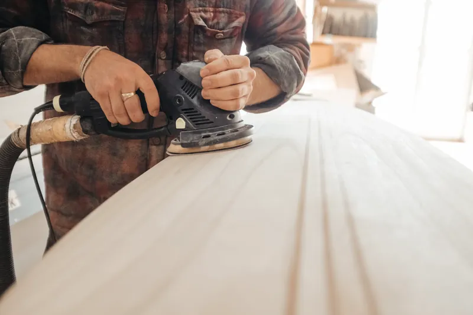
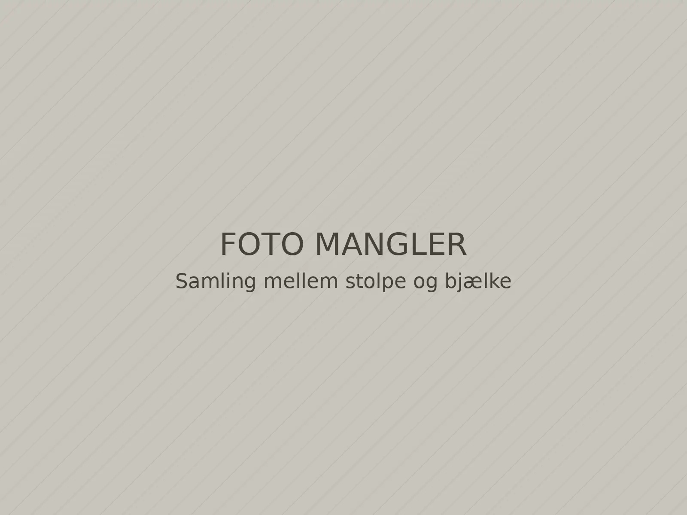

Terrasser og hegn
Terrasser i trykimprægneret, lærk eller hårdttræ. Vi bygger fundament, trapper og læhegn.
Tømrer i Næstved og omegn
Vi er et lille tømrer- og snedkerfirma, der arbejder for private i Sydsjælland. Du får én fast tømrer på opgaven fra første besøg til sidste liste.
 Illustrativt billede
Illustrativt billede
Ydelser
Vi tager både de mindre opgaver og de større ombygninger. Er du i tvivl om, hvad en opgave kræver, så skriv til os med et par billeder.
Terrasser i trykimprægneret, lærk eller hårdttræ. Vi bygger fundament, trapper og læhegn.

Udskiftning af vinduer og yderdøre med ny fuge, lysninger og indvendige lister.

Fra fundament og spær til færdige vægge. Vi samarbejder med murer og elektriker.

Trapper, indbyggede skabe, gulve og lofter, tilpasset dit hus.
Projekter
Billederne viser den slags arbejde, vi laver. Projekterne er illustrative eksempler i et fiktivt designkoncept.


Sådan foregår det
Du ved hele tiden, hvad næste skridt er, og hvornår vi kommer.
Skriv kort, hvad du vil have lavet, og send gerne et par billeder og mål.
Vi aftaler et besøg, måler op og taler om materialer og løsninger.
Tilbuddet viser materialer, arbejde og hvornår vi kan gå i gang.
Samme tømrer er på opgaven hver dag, og pladsen er ryddet, når vi kører.
Arbejdsområde
Værkstedet ligger i Næstved. Opgaver uden for området tager vi efter aftale.

Kontakt
Skriv et par linjer om opgaven og hvor du bor. Vi ringer dig op og aftaler et tidspunkt, hvor vi kan se den.
00 00 00 00Fiktivt nummer i demoen